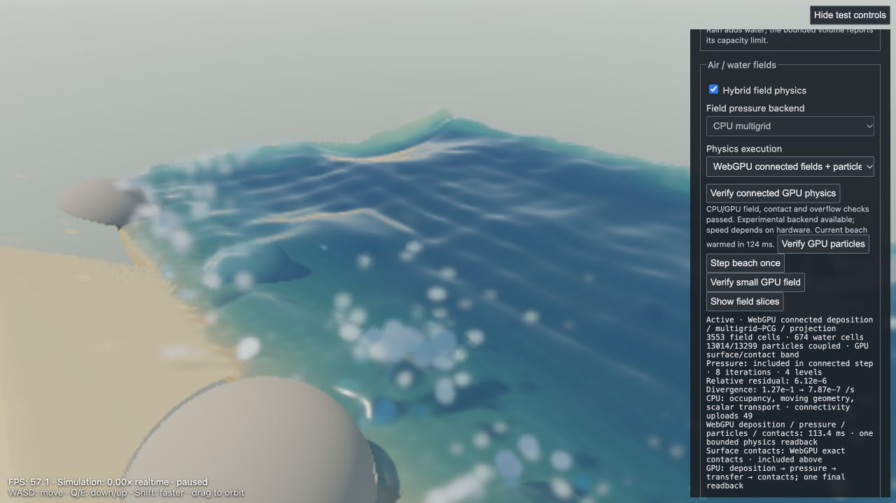

7 November 2026 · AMD Radeon Pro 560X / WebGPU GCN-4 in the local preview. Both live branches share this implementation; historical snapshots are unchanged.
Implemented and numerically validated, but experimental: CPU remains the default. Moving deposition, multigrid pressure and particle work into one submission did not outperform CPU on this machine. The existing GPU particle-only backend was the fastest option at 13,293 particles. These are measured results, not a predicted RTX speedup.
The new backend executes MAC interpolation, deterministic face-gather deposition, liquid-face extension, air advection, viscosity, compatible pressure RHS, multigrid-preconditioned conjugate gradients, projection, FLIP/PIC transfer, spatial hashing, neighbor search, surface packing, exact SDF contacts, and fluid transport in one WebGPU command submission with one final readback. There are no intermediate host transfers between these operations.
Grid connections and the Galerkin hierarchy are uploaded only when occupancy changes. Existing host phase classification stays authoritative, avoiding float32 cell-boundary disagreements. The GPU constructs interpolation stencils from a compact 17-float particle input, reducing that upload by 75% from 68 floats. Particle mass, exact carved contacts, held particles, boundary conditions and camera-independent physics are retained.
CPU work remains: particle prediction, occupancy/bin membership, moving collision geometry, topology rebuilds on phase changes, temperature/humidity transport and thermal exchange, rigid bodies, sand, rain and integration. The renderer remains WebGL. This is not an entirely GPU-resident simulation across frames.
Twenty steps per path, first five discarded; medians below include preparation, simulation, transfers and completion. The 110 × 98 m beach includes three boulders and 24 m/s wind; tides and fine-particle emission were disabled for this matched physics-only comparison. All optimizations were enabled. Runs are short and sequential, with GPU-first ordering; thermal/JIT effects mean small differences should not be treated as conclusive.
| Water particles | Backend | Median step |
|---|---|---|
| 3,024 | connected | 92.6 ms |
| 3,024 | cpu | 60.6 ms |
| 13,293 | connected | 143.0 ms |
| 13,293 | webgpu | 110.8 ms |
| 13,293 | cpu | 138.0 ms |
Multigrid reduced pressure iterations from roughly 54–58 in the earlier diagonal-PCG prototype to 7–9 on the moving beach, but its serial workgroup sweeps remained expensive on this GPU. Reduced iteration count did not translate into lower end-to-end latency. A more parallel pressure implementation and moving the remaining CPU/GPU boundary together deserve further work; adding more isolated GPU passes does not.
Work is bounded: 32,768 particles, 4,096 grid cells, 32 PCG cycles, one in-flight job, finite compilation/readback time budgets, exact overflow fallback and about 39.7 MiB fixed compute storage plus readback. Verification suspends rendering and prevents overlapping verification jobs. A slow/unavailable backend returns to CPU.
In the beach’s Air / water fields controls, click Verify connected GPU physics, then select WebGPU connected fields + particles · experimental under Physics execution. Verification pauses the beach and warms the current workload without advancing it. The separate pressure-backend control is disabled while this combined path is selected. Use Step beach once or resume. The CPU option remains available.
Compute-only comparison page · Numerical results · Small beach data · Large beach data · Rendered playback data
| Technique | Current state and recommendation |
|---|---|
| Deferred shading | Already partly used: surface-hit records are separated from receiver lighting. Further reuse of depth/normal/material data is useful, particularly for opaque surfaces. Transparent water, glass and secondary rays still need specialized passes; a wholesale deferred conversion is not the obvious next win. |
| Instancing | Already used for covariance-projected Gaussian primitives (InstancedBufferGeometry / gl_InstanceID). The remaining cost is largely per-instance shader work and overdraw, not one draw call per particle. |
| Frustum culling | High priority: compact visible spatial groups before expensive Gaussian lighting. Current vertex rejection is later than ideal; fullscreen SDF passes need tile/ray bounds rather than ordinary mesh culling. This must affect drawing only, never simulation. |
| Occlusion culling | Promising: conservative depth-pyramid tests for groups of particles, using opaque depth without waiting synchronously on queries. Water/glass must not be treated as opaque blockers. Reflections/refractions still need off-screen contributors. |
| Variable rate shading | Core WebGPU does not expose hardware VRS. Software equivalents are practical: separate softer particles into a lower-resolution pass, then reconstruct with depth-aware filtering. Fine particles already run at half linear resolution; further coarsening should preserve crisp edges. |
| Dithering | Useful for gradual LOD and banding. Stochastic transparency can avoid sorting but introduces noise and needs reconstruction; it is not automatically faster, and flicker is a particular risk here. |
| Shader optimization | Highest priority alongside earlier culling: avoid repeated SDF/lighting/medium integration, specialize small kernels, reuse receiver data and reduce transparent overdraw. The rendered smoke test showed about 29 ms each for sand grains and foam splats, versus 0.47 ms for foam lighting. Those particle drawing passes are concrete targets. |
Primary references: Three.js instancing; WebGPU API specification; GPU Gems: efficient occlusion queries; Stochastic Transparency.
Paused for inspection; the paused FPS value is not playback performance.
